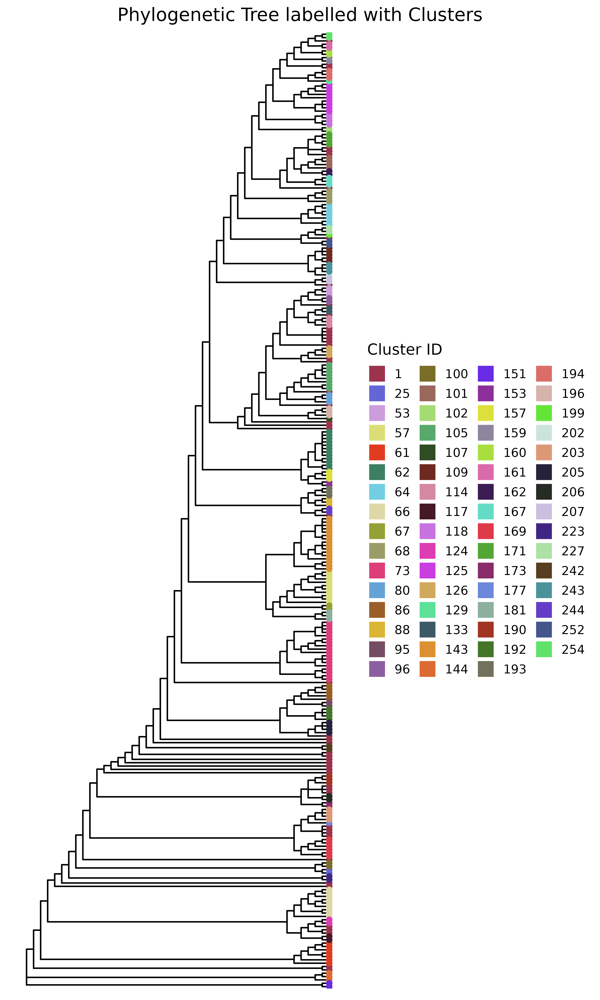
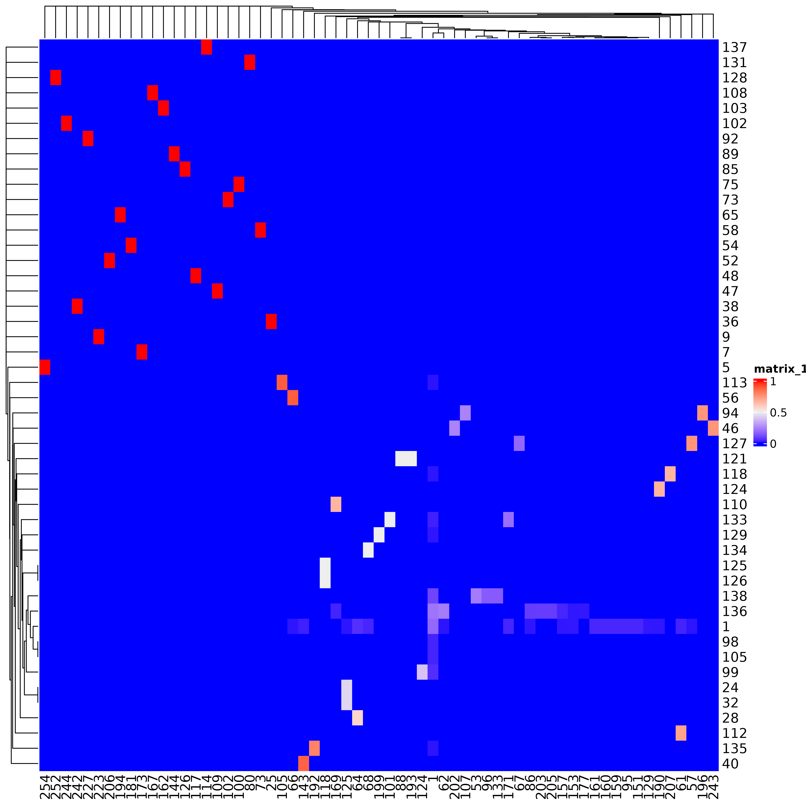
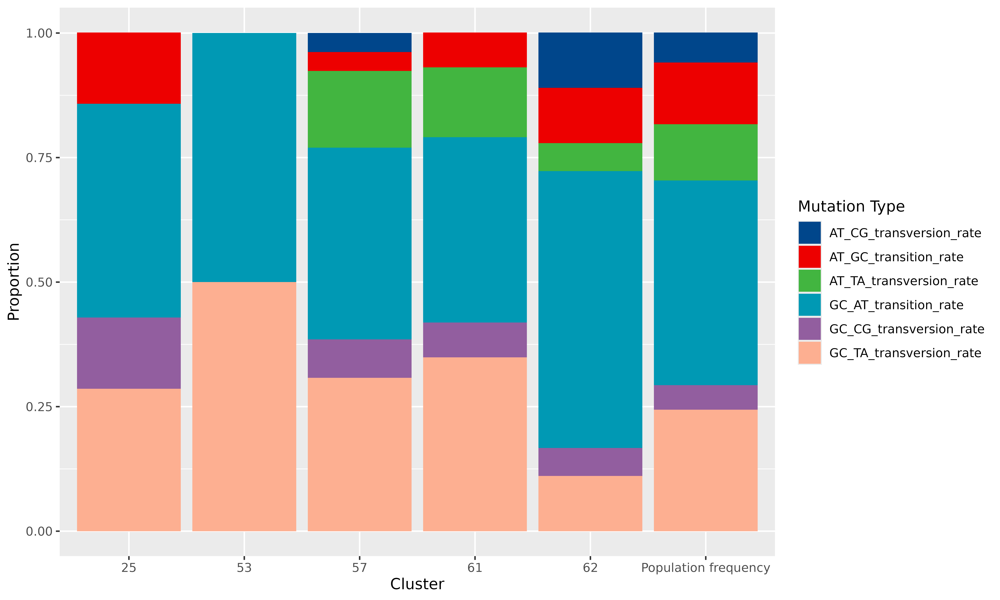

This vignette provides a brief introduction to the
transclust package, which is designed for analysis of
transmission clusters using a combination of whole genome sequencing
(WGS) data and epidemiological information. The package includes
functions for clustering, visualization, and statistical analysis of
transmission clusters. To get started, we will first load the package.
We will also load the ape package, which is used for
phylogenetic analysis with the package and in the vignette, and
tidyr, ggplot2 and paletteer for
data manipulation and visualization.
Loading and preparing data
The transclust package comes with a sample dataset that
can be used for demonstration purposes. The dataset contains
epidemiological information for a set of isolates. To load the dataset,
we can use the following command:
load(system.file("extdata", "example.Rdata", package = "transclust"))We first read in the sequence file which has been prepared using the
procedure described in Hawken et al.
(2022). We can read in the sequence file using ape’s
read.dna function:
dna_aln <- read.dna(system.file("extdata", "example.fasta", package = "transclust"), format = "fasta")Now that the sequence file is loaded, we can extract the variable
positions in the alignment. The dna_var_pos variable
contains a logical vector indicating which columns in the alignment are
variable. The dna_pt_labels variable contains the labels
for the sequences in the alignment, and trace_mat is a
matrix containing the trace data for the isolates. The valid set of
labels is determined by checking which labels in the
dna_pt_labels variable are present in the
trace_mat matrix.
# Get all variable positions in the alignment
var_pos <- apply(dna_aln, 2, function(x) sum(x == x[1]) < nrow(dna_aln))
# Only keep those labels that are in the trace matrix
valid_labels <- dna_pt_labels[labels(dna_aln)] %in% colnames(trace_mat)We can then subset the alignment to include only the variable positions from the isolates with valid labels:
dna_var <- dna_aln[valid_labels, var_pos]We then use the helper function get_snp_dist_matrix() to
calculate the SNP distance matrix for these isolates:
snp_dist <- get_snp_dist_matrix(dna_var)The snp_dist variable contains the SNP distance matrix,
which is a square matrix where each entry represents the number of SNP
differences between two isolates. The diagonal entries are all zero, as
they represent the distance between an isolate and itself.
Clustering isolates using a hard SNP threshold
Now that we’ve loaded our data, we can start clustering the isolates.
First, we want to use a hard SNP threshold to cluster the isolates. We
first convert the SNP distance matrix into a phylogenetic tree. For the
purposes of this analysis, we are going to construct a phylogenetic tree
using the complete linkage method. The hclust() function
from the stats package can be used to perform hierarchical
clustering on the SNP distance matrix, which can then be converted into
a phylogenetic tree using the as.phylo() function from the
ape package.
# Perform hierarchical clustering based on SNP distance matrix
snp_hclust <- hclust(as.dist(snp_dist))
# Convert hierarchical clustering into a phylogenetic tree using the complete linkage method
phylo_tree <- as.phylo(snp_hclust)The get_tn_clusters_snp_thresh() function takes the SNP
distance matrix and a threshold value as input and returns a list of
clusters. We use a threshold of 10 SNPs for this example:
clusters_snp <- get_tn_clusters_snp_thresh(snp_hclust, phylo_tree, 10)We can then visualize the clusters using the
plot_clusters_phylo() function:
plot_clusters_phylo(clusters_snp, phylo_tree)
The plot shows the phylogenetic tree with the clusters highlighted.
Clustering isolates using a threshold-free approach
In addition to the hard SNP threshold approach, we can also use a
threshold-free approach to cluster the isolates. The package implements
the method described in Hawken et al.
(2022) in the get_tn_clusters_sv_index() function.
The method uses a threshold-free approach to identify clusters based on
the structure of the phylogenetic tree. For this function, we first need
to generate a parsimony tree using the get_phylo_tree()
function:
# Generate a parsimony tree
phylo_tree_pars <- get_phylo_tree(dna_var, snp_dist, "pars")We can now use the get_tn_clusters_sv_index() function
to identify clusters based on the parsimony tree. This function takes in
a few more inputs than the SNP threshold function:
clusters_sv <- get_tn_clusters_sv_index(
dna_var, snp_dist, ip_seqs_3days, ip_seqs,
dna_pt_labels, dates, phylo_tree_pars
)The clusters_sv object contains the clusters identified
using the threshold-free approach. The plot shows the phylogenetic tree
with the clusters highlighted.
plot_clusters_phylo(clusters_sv, phylo_tree_pars)
Comparing clusters
These two trees look quite different. We can compare the clusters
generated using the two methods using the
compare_clusters() function, which generates a heatmap
showing the overlap between the clusters by indicating the proportion of
isolates in each cluster that are also present in the clusters generated
by the other method:
compare_clusters(clusters_snp, clusters_sv)
Some statistical analysis of the clustering results
The transclust package also provides functions for
statistical analysis of the clustering results. For example, we can use
the intra_cluster_genetic_var_analysis() function to
calculate the genetic variation within each cluster:
mut_var_df <- intra_cluster_genetic_var_analysis(clusters_sv, dna_aln, var_pos)This dataframe has columns for the total number of variable sites, and also the proportions of each of the six types of base substitutions present in each cluster. But this isn’t very intuitive to just look at, so we can plot this. First, we drop any possible NA values. For this plot, we only want to compare relative frequencies of the different types of base substitutions, so we also exclude the first column - the total number of variable sites. We further subset the data frame to only include the first few rows for clarity in the plot:
Then we can plot the proportions of each type of base substitution in
each cluster. For this, the ggplot2 package is used to
create a stacked bar plot:
# Add column for cluster using rownames before pivoting
mut_var_df$cluster <- row.names(mut_var_df)
# Convert the data frame to long format for ggplot
mut_var_df_long <- pivot_longer(
mut_var_df,
cols = -cluster,
names_to = "mutation_type",
values_to = "proportion"
)
# Create the stacked bar plot
ggplot(mut_var_df_long, aes(x = cluster, y = proportion, fill = mutation_type)) +
geom_bar(stat = "identity") +
labs(x = "Cluster", y = "Proportion", fill = "Mutation Type") +
scale_fill_paletteer_d("ggsci::lanonc_lancet")
We can clearly see very specific mutational signatures emerge in the clusters when compared to the population as a whole.